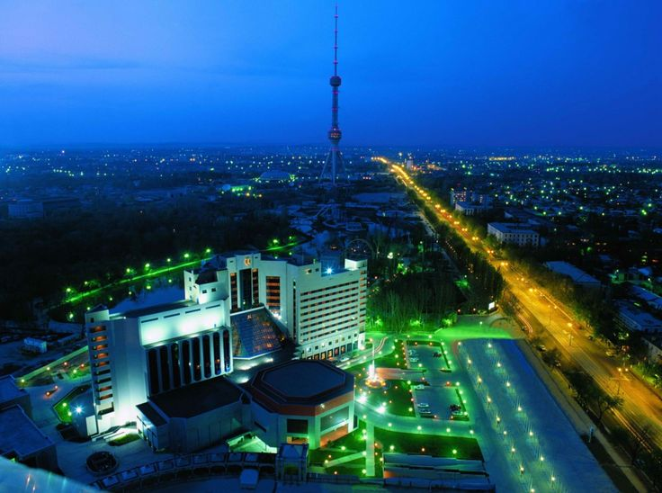
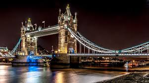
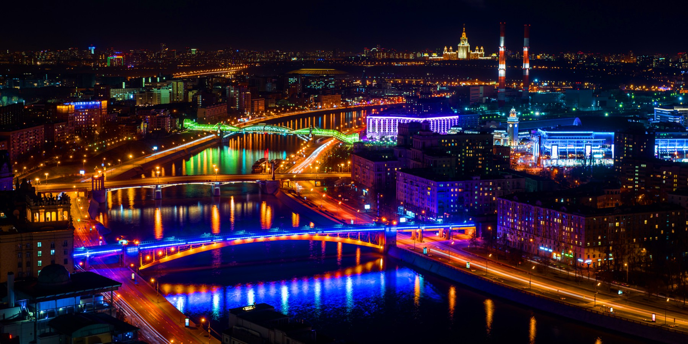

Ташкент – столица Узбекистана и крупнейший город Центральной Азии. Ташкент расположен в северо-восточной части страны... 
Лондон – столица Великобритании. Также известен как Большой Лондон. Ниже по течению реки Темзы, в 64 км от Северного моря... 
Город Москва – столица России, расположенная на крайнем западе страны. С момента первого упоминания в летописи 1147 года... 